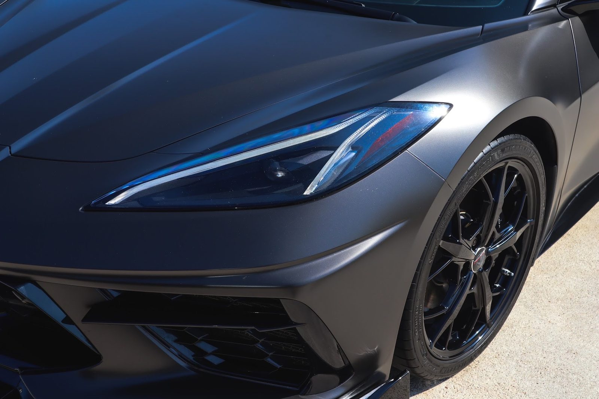

Interior detailing
Steam for cloth, conditioner for leather, and a careful pass over vents, seams and the places that get missed.
- Steam clean
- Leather care
- Odor removal
Donavon's · Buda
Donavon's Detailing serves Buda from Kyle.
Donavon's Detailing is based in Kyle and works with customers from Buda. Call (512) 820-0198 to ask about timing and directions.
Steam for cloth, conditioner for leather, and a careful pass over vents, seams and the places that get missed.

The team arrives with water and power and details the car in your driveway or at your workplace.

Polishing to bring back clarity in the paint, from fine swirls to light scratches.

A protective layer for the paint, for owners who want the finish to last.

Smoke, spilled milk, pets and mildew: extraction and treatment aimed at the source.

Cloudy, yellowed lenses cleaned up so the front end looks right again.
Quinten came out and gave our Outback a full interior and exterior detail. He did an excellent job transforming our car from a family SUV into nearly its original factory condition. He was very thorough and easy to work with. Would highly recommend using these guys as they do an excellent job and provide great service in the process for a reasonable price too.
Thank you Donovan and your team! As a new mom with a toddler, my car had food crumbs, spilled drinks, sticky spots, half filled water bottles, and dog hair everywhere. Every detail was spotless, and the car had that new car smell. They were thorough, professional, and paid attention to all the little areas that usually get missed. Thank you so much!
I recently hired Caleb with Donavon’s Detailing to try and remove some harsh staining on my beige seats from use over time. I was not expecting much to be done, as I’ve had others detail my seats and they all looked similar to when they started. I was absolutely impressed with the work that they did because my seats now look brand new again.
Donavon’s Detailing was a great choice for me! I had a really terrible emergency with my car and honestly didn’t even feel comfortable driving it. They were able to schedule me right away and deep clean my car, which made me feel so much more comfortable getting back on the road. My car now smells fresh and clean, and I’m really happy with the results. Thank you again, Donavon’s Detailing!
Donavon's Detailing took care of a work car that was being reassigned to another employee. They cleaned and detailed a Chevy Malibu making it look clean and ready for a new owner. Highly Recommend their services, and will definitely used them again!!
Tell us about the car and we will plan the visit.